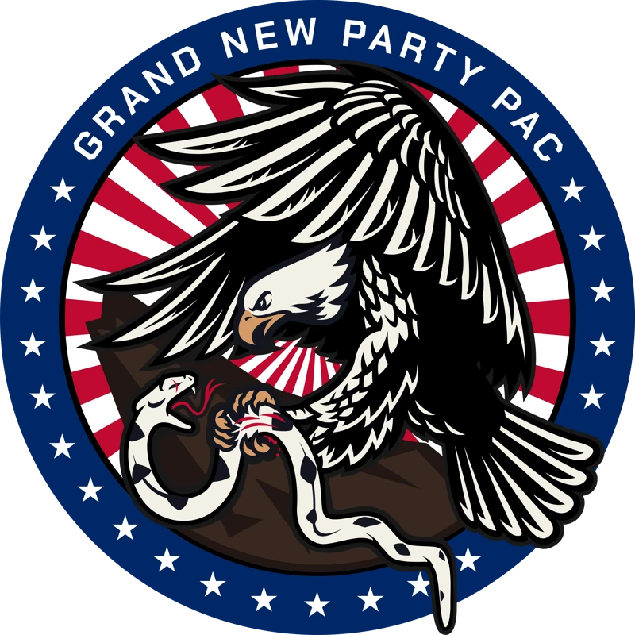
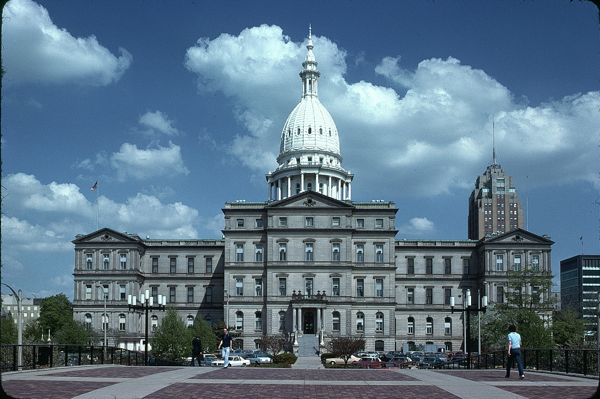

Follow GNPPAC commentary and video across its active public channels.
Follow updates, clips, graphics, and public calls to action.
Watch GNPPAC programming on its Rumble channel.
Subscribe to Grand New Party videos on YouTube.